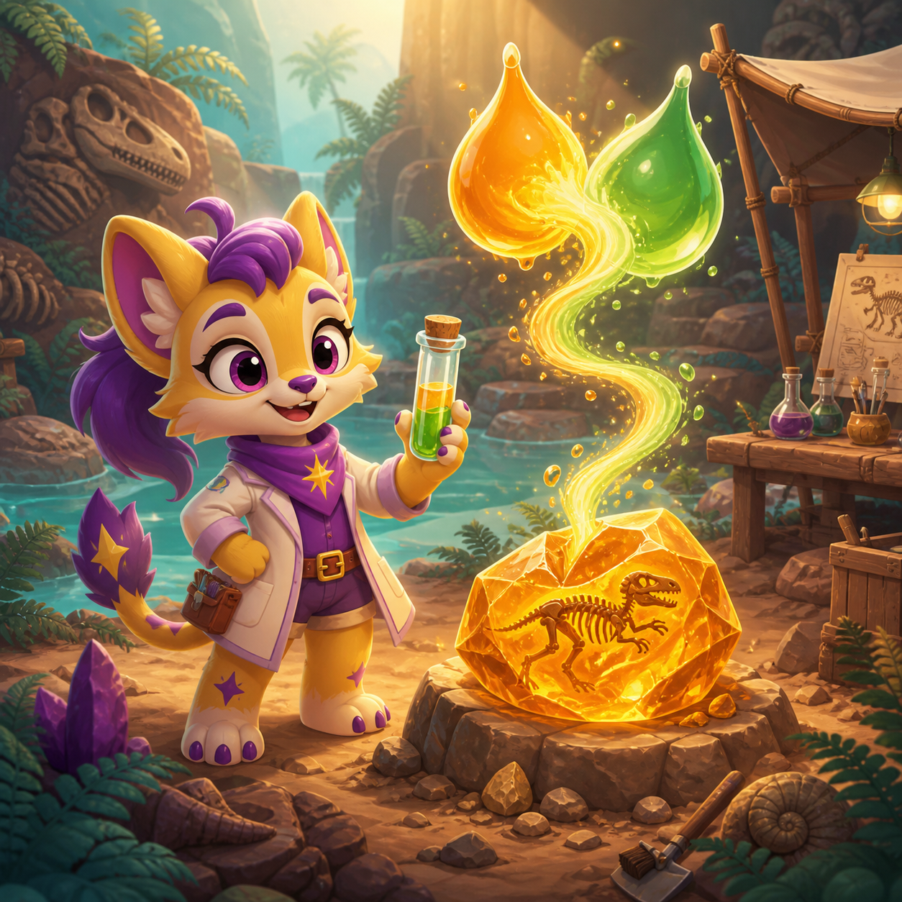
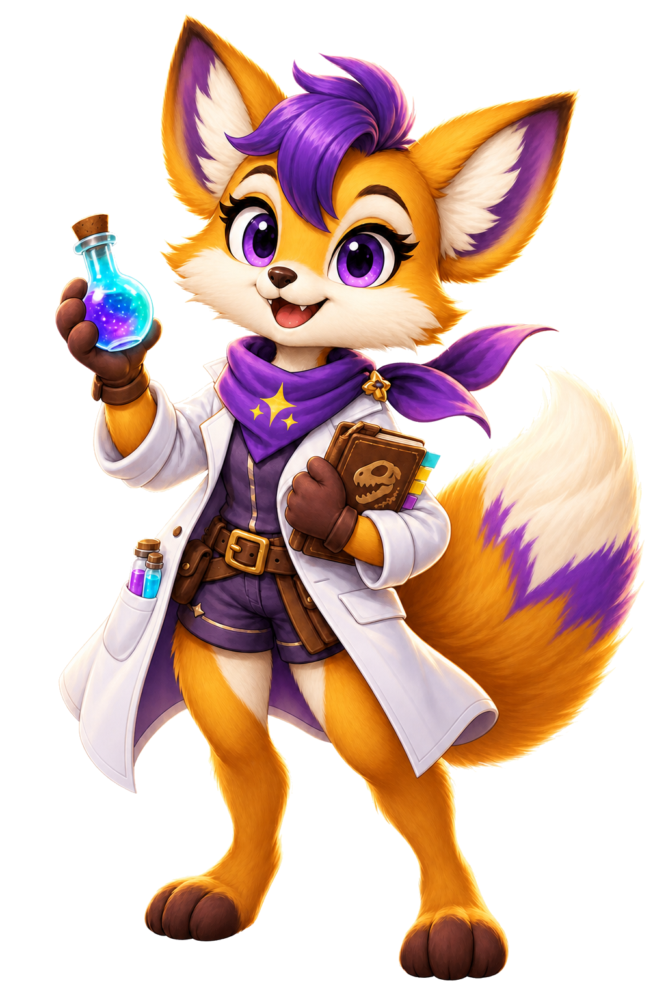

Dino Color Lab
Language
Sound
Spark Paw Fia's lab
Mix two fossil inks to match the dino sample.
Choose two reagents, predict the blend, then lock the colour before the timer bar cools.
4 samples

How to play

Each sample has one exact two-ink recipe. Tap two different reagent cards, then mix. A correct blend opens the next sample; a wrong blend can be tried again.
Dino Color Lab
Target sample
Leave the lab?
Your current sample choices will be lost, but your best run stays saved.
Sample set complete